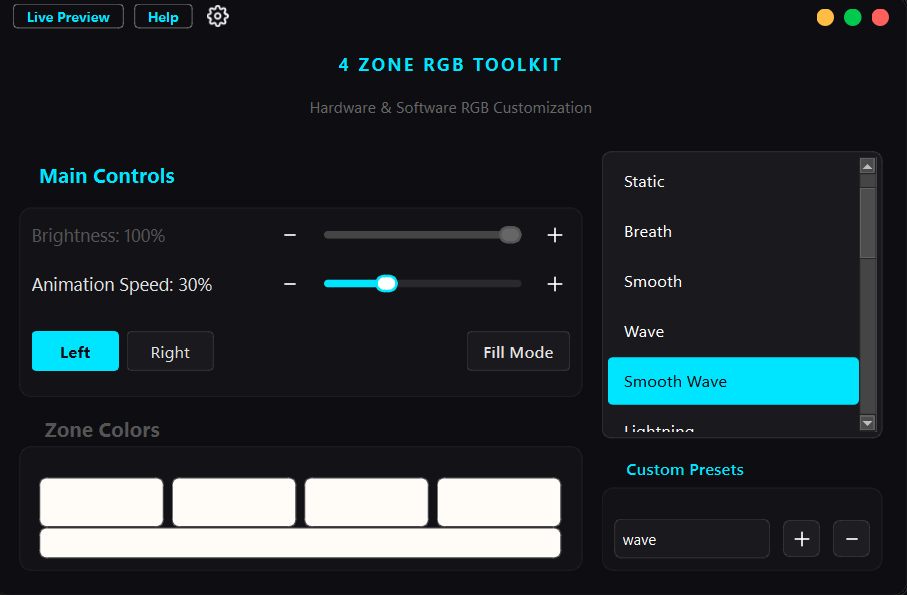

Open-source · Free forever
Hardware & software RGB control designed for Lenovo LOQ and Legion laptops.

All the controls you need — nothing you don't.
Zero CPU usage. Processed directly by the keyboard controller.
Built-in settings for a seamless, automated experience.
Highly reactive lighting powered by optimized software algorithms.
If you like this project, consider giving it a
⭐ Star on GitHub